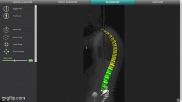
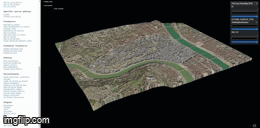
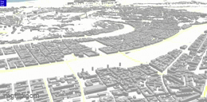
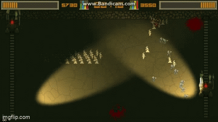

Projet de fin d'étude
algorithmes d'illumination globale en webGL
(mars 2016 - aout 2016)
Popup builder
éditeur 3D en webGL de maison en kit
(septembre 2016 - avril 2018)
SMAIO i-PLAN
éditeur 3D en webGL de colonne vertébrale
(septembre 2016 - avril 2018)
Contributions open source
contributions à des projets géospatial open-source
(janvier 2021 - décembre 2023)
UD-IMUV
jeu sérieux multijoueur en webGL pour interagir autour de
données géospatiales
(janvier 2021 - décembre 2023)
Galeri3
application en webGL pour collaborer autour de données 3D
géospatiales
(janvier 2021 - décembre 2023)
J'ai eu l'opportunité de travailler sur un projet ambitieux : le Popup Builder, une application réalisée en three.js, permettant de concevoir des maisons en kit de type Popup House, en 2D et en 3D. Cet outil offre une personnalisation intuitive et génére automatiquement les matériaux nécessaires, avec des fichiers prêts à être envoyés à l'usine pour fabrication.

Ce projet m'a permis de développer des compétences variées :
- Gestion de projet, en coordonnant les étapes du développement pour garantir le respect des délais et exigences.
- Conception et développement webGL, pour des rendus interactifs en 3D.
- Communication client, en intégrant leurs besoins et retours dans le processus.
Cette expérience, à la fois technique et humaine, m'a permis de renforcer mes compétences en programmation et modélisation 3D tout en découvrant les enjeux globaux d'un projet. Bien que la startup Popup House n'existe plus, des vidéos du programme sont encore disponibles
J'ai développé un éditeur de colonne vertébrale, réalisé en babylon.js, intégré dans un logiciel destiné aux chirurgiens spécialisés sur la colonne vertébrale. Ce programme innovant génère une colonne vertébrale à partir d'un nuage de points et permet également d'éditer ces données.

L'objectif principal est d'aider les chirurgiens à planifier leurs opérations avec précision, en leur fournissant un outil leur permettant de visualiser et d'ajuster les structures vertébrales en amont des interventions. Ce projet, à la fois technique et médical, s'est révélé particulièrement intéressant et porteur de sens grâce à son impact concret sur la santé des patients.
Parmi ces projets, j'ai travaillé sur :
- iTowns: un framework basé sur three.js, développé par l'IGN pour la visualisation de données 3D géospatiales. J'ai contribué à ce projet en réalisant plusieurs pull requests, notamment sur la gestion du style des 3D Tiles. 
- ud-viz: une collection de packages JavaScript (back et front) reposant sur iTowns. J'ai supervisé et architecturé l'ensemble du repository, tout en développant différents modules. J'ai, entre autres, conçu un moteur de jeux permettant la création de scènes géospatiales multijoueurs ou non, la visualisation et l'interaction avec des nuages de points, ainsi que plusieurs utilitaires complémentaires. 
Cette expérience m'a permis de renforcer mes compétences en développement logiciel et en manipulation de données 3D tout en contribuant activement à des outils utilisés dans des environnements de recherche avancés.
Ce projet s'est concrétisé par le développement d'un jeu web multijoueur, basé sur le moteur de jeu d'ud-viz. Les joueurs y contrôlent un avatar évoluant sur une île volante située au-dessus de la ville de Lyon.

Plusieurs activités interactives y sont proposées, notamment :
- Une salle de conférence avec une maquette dynamique pour visualiser et étudier des données urbaines.
- La création de studios collaboratifs, dédiés à l’exploration et à l’étude de la ville.
- Des zones de discussion (chat) pour échanger avec d’autres joueurs.
- Une salle d’exposition, mettant en avant divers contenus liés à l’urbanisme.

Ce projet a permis de créer un outil à la fois ludique et utile, favorisant l’échange et la collaboration autour des enjeux urbains et scientifiques.
Le code est open-source et disponnible ici.
Un article scientifique a été publié ici.
Dans ce cadre, j'ai développé une application de collaboration géospatialisée. Cette dernière, basée sur ud-viz, offre plusieurs fonctionnalités :
- Création de conversations géospatialisées, permettant d’échanger directement sur des données géolocalisées.
- Gestion des utilisateurs avec un rôle d’administrateur, incluant la supervision et les droits d'accès.
- Importation et stockage de données 3D directement sur les serveurs, facilitant leur exploitation.

Le code est open source et accessible ici.
la présentation du programme commence à 38 minutes
J'ai également développé une application web dédiée, permettant de calculer l'ambient occlusion d'un modèle 3D, offrant ainsi une solution interactive et accessible pour visualiser et analyser cet effet visuel.
Guitare
Je joue de la guitare et suis passioné par cet instrument
Musique assisté par ordinateur
Je compose sous Fruity loops et Ableton Live 11
Steam Pong
un jeu vidéo stratégique où deux joueurs s'affrontent
(2014)
Souk
un jeu vidéo multijoueur d'observation et de discrétion
(2018)
Covidjam
un jeu vidéo multijoueur où l'on incarne une foule de
manifestant
(2019)
Portfolio
ce portfolio
(2025)
Nous avons d'abord conçu le gameplay : deux joueurs, dans un style inspiré du Pong classique, s'envoient des unités. Chaque unité qui traverse la ligne adverse rapporte des points. Pour contrer les unités adverses, il faut utiliser les siennes en choisissant la bonne couleur, suivant une mécanique de type "pierre-feuille-ciseaux".

De mon côté, j'ai créé deux musiques électroniques industrielles pour renforcer l'immersion des joueurs, ainsi que divers bruitages pour accompagner l'action. À la fin de la game jam, le jeu a été évalué et a reçu des retours positifs.


Aujourd'hui, je travaille sur Ableton Live set 11 sur lequel je compose des morceaux variés basés sur mes goûts musicaux.
- Composition de morceaux musicaux et de chansons
- Organisation de concerts (programmation et mise en place)
- Scène et travail d'enregistrement en studio
Cette expérience m’a permis de rencontrer des professionels dans le milieu de la scène et du spectacle, tant au niveau musical que technique, élargissant ainsi mes horizons.
Aujourd'hui je poursuis l'exploration de différents répertoires musicaux ainsi que la pratique de la guitare (classique, électrique, manouche).